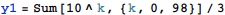

東京大学 2013年 理科 第5問
問題
次の命題Pを証明したい。
命題P 次の条件(a),(b)をともに満たす自然数(1以上の整数)Aが存在する。
(a) Aは連続する3つの自然数の積である。
(b) Aを10進法で表したとき、1が連続して99回以上現れるところがある。
以下の問いに答えよ。
(1) yを自然数とする。このとき不等式
が成り立つような正の実数xの範囲を求めよ。
(2) 命題Pを証明せよ。
解答
(1)
Reduceを使って不等式を解く。
y=1のときの解はy≥2のときの解に含まれるので、求める範囲は
(2)
(1が99個並んだ数を3で割った数)とする。

このとき連続する3整数x+y-1,x+y,x+y+1の積Aは
となる。最も長く1が連続する部分の長さを確認すると、
であり、1が連続して99回出現する。
よって命題Pは示された。
補足・感想
(2)は存在を示すだけでよいので、実際に計算してしまって求めた。